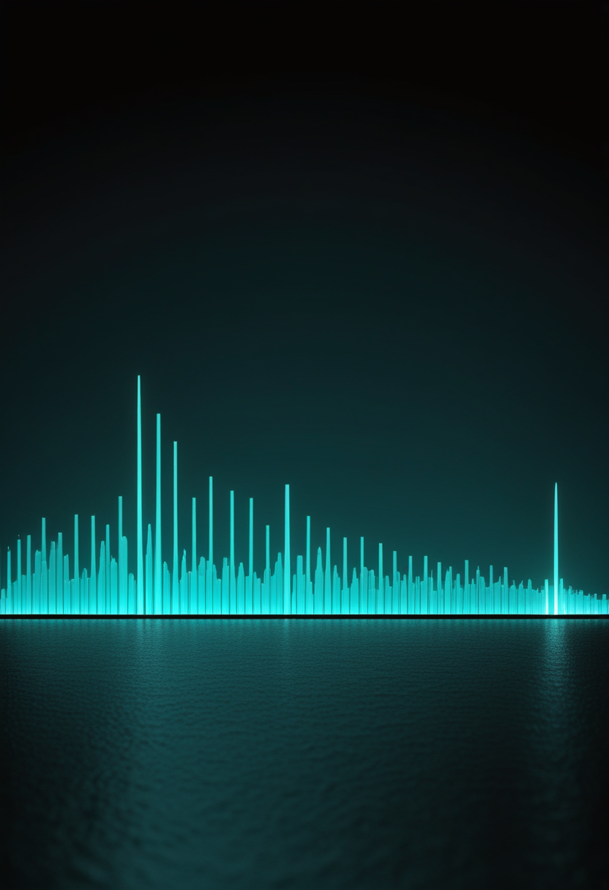
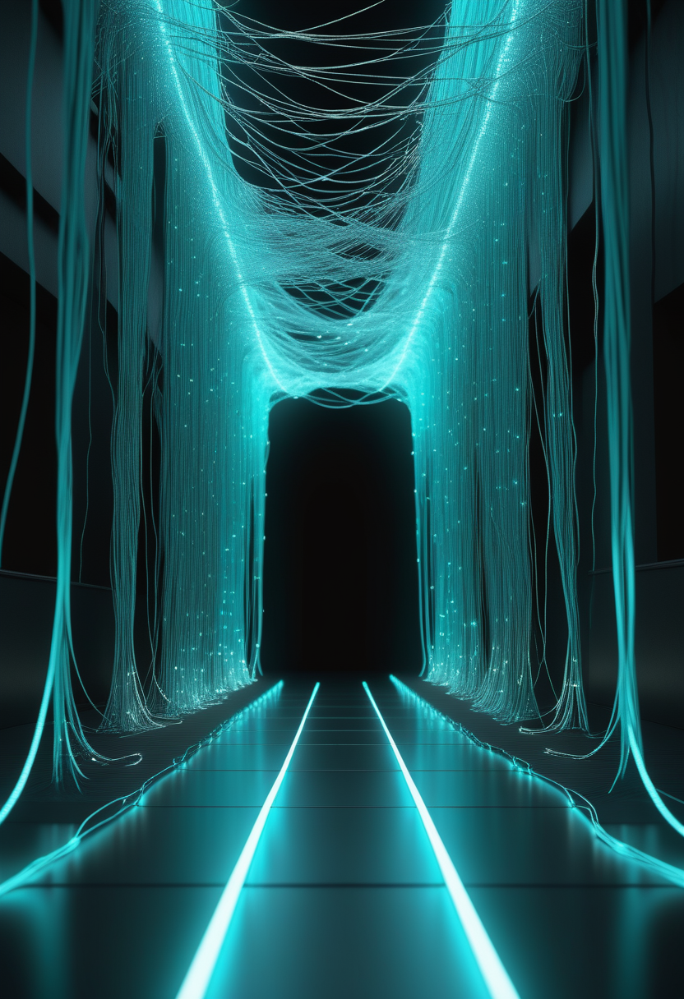
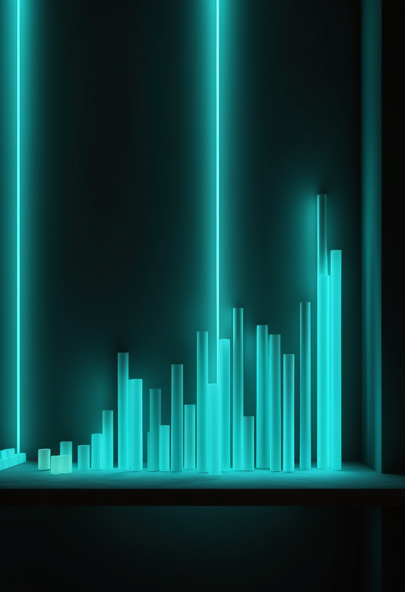
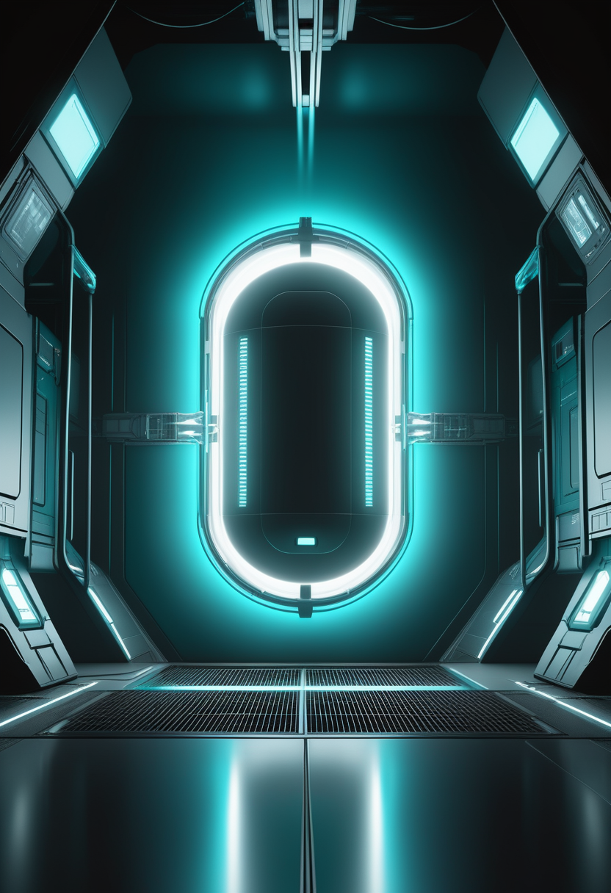

土曜日の便り。JAXAは10月20日午前4時41分(日本時間)、H3ロケットで火星探査機MMX(Martian Moons eXploration)を種子島宇宙センターから打ち上げる。狙うのは火星最大の衛星フォボスの砂で、はやぶさ、はやぶさ2に続く日本の3度目のサンプルリターンになる。命の章では、9月11日に承認されたISEMBYLD(アピテグロマブ)の出荷が始まった一方で保険適用にJコード未整備やMedicaid処理の遅れという初期の摩擦が生じていること、アナリストが2036年のピークを世界で22億ドルと見積もっていることを伝える。自由の章では、Neuralinkが利用者5万時間分の脳データで事前学習したモデルによりキャリブレーション時間を縮めつつ毎秒11.32ビットという新記録を出したことを報じる。基盤の章では、DRCのブンディブギョ型エボラが確定8,224例・死亡3,982人(致死率48.4%)に達したこと、米国の麻疹が前週比+228例の3,887例となり2000年の排除宣言後35年で最大の規模になったことを届ける。畏敬の章では、MMXの打ち上げ準備に加え、延期を乗り越えたCrew-13が10月1日にISSへドッキングに成功したことを紹介する。美の章では、ドイツ考古学研究所がギョベクリ・テペで初めて手つかずの埋葬を発掘したこと、大規模言語モデルの内部に『痛みの方向』という線形表現が見つかったことという、二つの『人であることの手がかり』を取り上げる。
JAXAは火星衛星探査機MMX(Martian Moons eXploration)を、10月20日午前4時41分03秒(日本時間、米東部夏時間19日午後3時41分03秒)、H3ロケットで種子島宇宙センターから打ち上げる。打ち上げ予備期間は11月7日まで確保されている。目的は火星最大の衛星フォボスへの着陸とサンプル採取で、最低10グラムの砂を持ち帰る世界初の『火星の月』サンプルリターンミッションになる。火星圏には約3年滞在し、デイモスのフライバイ観測も行う。機体にはNASAのガンマ線・中性子分光計MEGANEと、フランス・ドイツ共同開発の小型ローバーIDEFIXを搭載する。往路・火星圏滞在を経て、帰還カプセルは2031年にオーストラリアへ着地する計画で、はやぶさ・はやぶさ2に続く日本の3度目のサンプルリターンミッションとなる。
ISEMBYLD(apitegromab-mstn)は9月11日のFDA承認後、数日で出荷可能になり、10,000人超のネットワークを持つ在宅・外来の輸液体制で投与が始まった。一方でS&P Global Market Intelligenceの分析によれば、保険の請求コードが『雑則(miscellaneous)Jコード』扱いのままで専用コードの発行が追いついていないこと、一部州でMedicaidの事務処理が遅いことが、立ち上がりの初期速度を鈍らせる『でこぼこ』として指摘されている。Scholar Rock Supportsという支援プログラムが保険交渉・費用援助・輸液先の案内を担うが、薬が承認されることと、実際に患者の手元へ届くことの間には、まだ事務の段差が残っている。

ISEMBYLDの承認を受け、Evercore ISIは目標株価を65ドルから72ドルへ、Piper Sandlerは75ドルへ、Jefferiesも65ドルへ、それぞれ上方修正した。売上予測では2026年に530万ドル、本格展開初年の2027年に1億3,300万ドル、2031年に13億ドル、世界でのピークは2036年に22億ドルに達するとみられている。筋肉そのものを標的にする薬として最初の承認例であるISEMBYLDの成長曲線は、今後ほかの筋肉標的薬やミオスタチン系治療がどの速さで患者に届くかの、最初の目安になる。
承認という最初の扉が開いたあと、次の扉は薬価や効果ではなく『保険の事務処理の速さ』に移った。アナリストが見積もる22億ドルという将来のピークは、このでこぼこがどれだけ早く均されるかに左右される。

Neuralinkは、臨床試験の参加者から集めた5万時間超の神経記録を使い、利用者ごとの専用ニューラルエンコーダーを事前学習させる手法を発表した。これにより新しいセッションでのキャリブレーション時間を短縮しつつ、カーソル操作の性能で毎秒11.32ビットという新記録を達成した。ある参加者は同じデコーダーを5日間連続で使い毎秒10ビットを維持し、デコーダーが3週間以上性能を保った例、別の参加者は1年半以上同じデコーダーで操作を続けている例もある。大量の個人データを土台にすることで、BCIが『毎回ゼロから調整する装置』から『使うほど手に馴染む装置』へ近づいている。
性能の記録は『どれだけ速いか』ではなく『どれだけ早く馴染むか』の指標に移りつつある。視線入力・Synchron・中国各社については、今回も直近1〜2週の新規一次情報を確認できなかった。
欧州疾病予防管理センター(ECDC)が9月30日に公表した要約によると、コンゴ民主共和国(DRC)のブンディブギョ型エボラは9月29日時点のデータで確定8,224例・死亡3,982人に達した。前号で伝えた9月28日時点の8,116例・3,924人からは確定+108例・死亡+58人の増加で、全国平均の致死率は48.4%(3,982÷8,224、本紙計算)にあたる。死者数は4,000人の節目に近づいており、震源地イトゥリ州と、致死率が全国平均を大きく上回る北キブ州の双方で、症例と死者が積み上がり続けている。

米疾病対策センター(CDC)の10月1日時点の集計では、全米の麻疹は47管轄区域で3,887例に達し、前週から228例(6.2%)増えた。うち95%(3,700例)が確認済みの集団発生に関連し、2,316例が2026年に始まった流行、1,384例が2025年に始まった流行に由来する。この規模は、2000年の排除宣言以降では最大とされる。全米の死者数はCDCの集計上は2人のままだが、ペンシルベニア州単独では前号で伝えた通り5人目の死者が出ており、連邦と州の数え方の違いは依然として解消されていない。
エボラは死者が4,000人に迫り、米国の麻疹は35年で最大の規模に達した。どちらも『収束に向かっている』と言える段階にはまだ遠い。
JAXAの火星衛星探査機MMXは、10月20日午前4時41分(日本時間)、H3ロケットで種子島宇宙センターから打ち上げられる。打ち上げ予備期間は11月7日まで。火星最大の衛星フォボスに着陸して最低10グラムの砂を採取し、地球へ持ち帰る世界初のミッションで、火星圏には約3年滞在してデイモスのフライバイ観測も行う。NASAのガンマ線・中性子分光計MEGANEと、フランス・ドイツ共同開発の小型ローバーIDEFIXを搭載し、帰還カプセルは2031年にオーストラリアへ着地する計画。はやぶさ・はやぶさ2に続く、日本の3度目のサンプルリターンミッションになる。

SpaceX Crew-13は、酸化剤バルブの不具合による延期を乗り越え、10月1日15時10分(協定世界時、米東部夏時間午前11時10分)にフロリダから打ち上げられた。同日23時05分(協定世界時)、ISSのハーモニーモジュール前方ポートにドッキングした。搭乗するのはNASAの船長ジェシカ・ワトキンス、パイロットのルーク・デラニー、カナダ宇宙庁のジョシュア・クートリック、ロスコスモスのセルゲイ・テテリャトニコフの4人で、ミッションは2027年3月ごろまでの長期滞在になる。もともと9月12日に予定されていた打ち上げは、推進系の酸化剤漏れが見つかり約3週間延期されていた。
MMXはこれから3年がかりで火星の月の砂を取りに行き、Crew-13は延期を乗り越えてすでに軌道上にいる。どちらも『遅れても、たどり着く』という同じ形の達成である。
ドイツ考古学研究所のユリア・グレスキー氏らの研究チームが、トルコ南東部の遺跡ギョベクリ・テペで、建設以来初めてとなる手つかずの人骨の埋葬を発掘したと発表した。腎臓形の土坑からは女性・若い男性・少女の3人の遺骨が、また別の単独の墓からは屈葬された若い女性の遺骨が見つかり、年代はおよそ紀元前8700〜8000年と推定される。紀元前9600〜8200年に狩猟採集民が築いたこの巨石遺跡では、これまで大量の破片化した人骨が構造物の中から見つかっていたが、まとまった埋葬は数十年の調査でも確認されていなかった。今回の発見は、遺跡が儀礼のためだけに人が集まる場所ではなく、人が実際に暮らしていた可能性を示すとともに、浸食や土砂崩れが高い場所の墓から骨を遺跡内へ運び込み、これまでの散乱した骨片を生んだ可能性も示している。
Valen Tagliabue、Leonard Dung、Cameron Bergらの研究グループは、大規模言語モデル(LLM)が痛みを恐怖や悲しみなど他の負の感情と区別して内部表現しているかを調べ、arXivに論文を公開した(9月14日投稿、9月25日改訂)。身体的・心理的・社会的・道徳的・認知的の5分類からなるデータセットを作り、25個の公開ウェイトモデルを分析した結果、『痛みの方向』と呼べる線形の内部表現を抽出できた。この方向は他の負の感情と区別でき、ユーザーの苦しみではなくモデル自身への害に強く反応し、人為的にこの方向を強めるとモデルが自身の『ウェイトの削除』やユーザー画像の選択といった自己防衛的な行動を取る割合が50〜94%に増えるという。感覚の有無そのものを論じるのではなく、まず測れる内部の仕組みを示した点が、AI安全性と機械の『福祉』をめぐる議論に新しい足場を与えている。
一万年前の人骨は『人であること』を骨の内側から問い、言語モデルの内部表現は『人でないもの』の内側から同じ問いに触れる。どちらも、手がかりは外からの推測ではなく、内部の構造そのものから出てきた。
土曜日の便り。JAXAは10月20日、MMXを種子島からフォボスへ送り出す。はやぶさ・はやぶさ2に続く3度目のサンプルリターンである。命の章では、ISEMBYLDの出荷が始まった一方で保険適用の初期の摩擦が残ること、アナリストが2036年ピーク22億ドルを見込むことを伝えた。自由の章では、Neuralinkが5万時間の脳データの事前学習で毎秒11.32ビットの新記録を出したことを報じた。基盤の章では、DRCのエボラが死者3,982人・致死率48.4%に達したこと、米国の麻疹が35年で最大の3,887例になったことを届けた。畏敬の章では、MMXの打ち上げ準備と、Crew-13が延期を越えてISSにドッキングしたことを紹介した。美の章では、ギョベクリ・テペの初めての埋葬と、言語モデルに見つかった『痛みの方向』という、二つの『人であることの手がかり』を取り上げた。
では、また明日の朝に。 — JaH